Чистая установка Windows 10 – пошаговая инструкция
Скачать утилиту для загрузки образа Windows 10 вы можете в разделе "Скачать Windows"
Запишите загрузочный DVD для установки или создайте загрузочный USB носитель
Загрузите компьютер с установочного носителя
Выберите языковые предпочтения и нажмите кнопку Далее
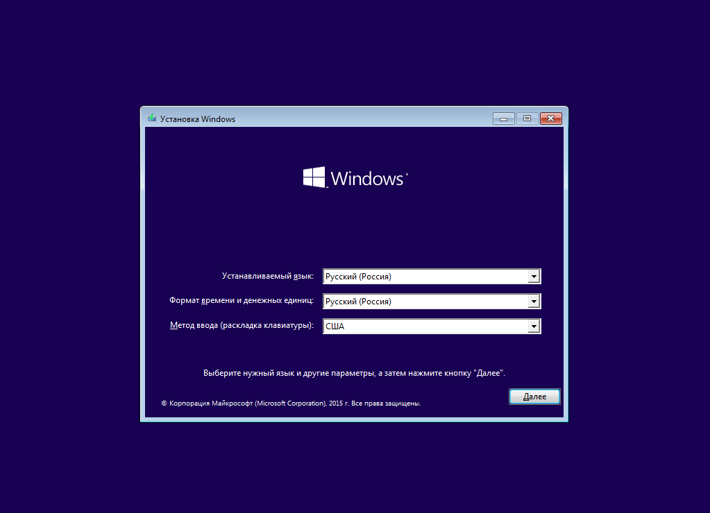
Нажмите кнопку Установить для начала процедуры установки Windows
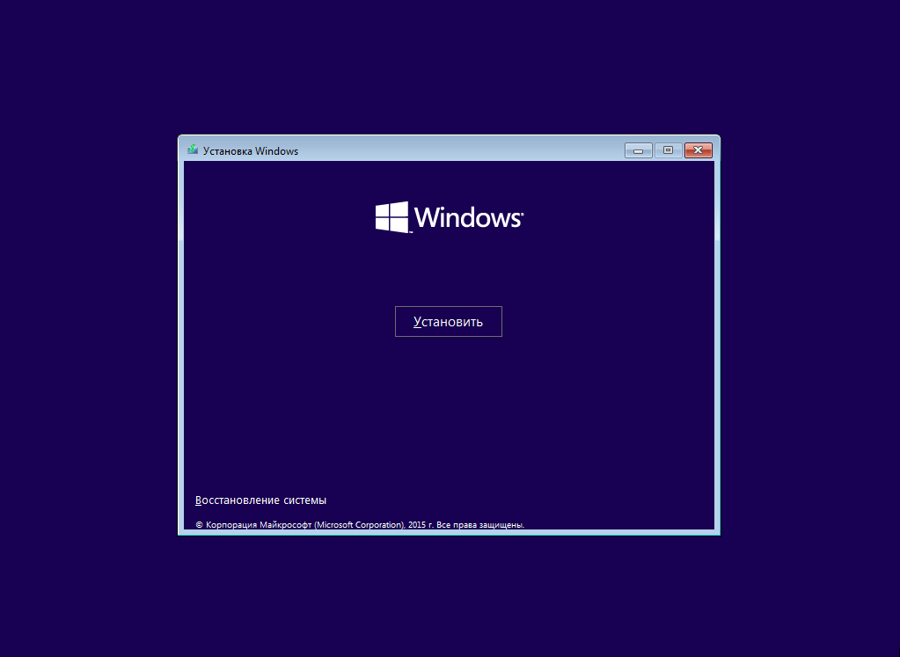
Прочитайте и примите условия лицензионного соглашения
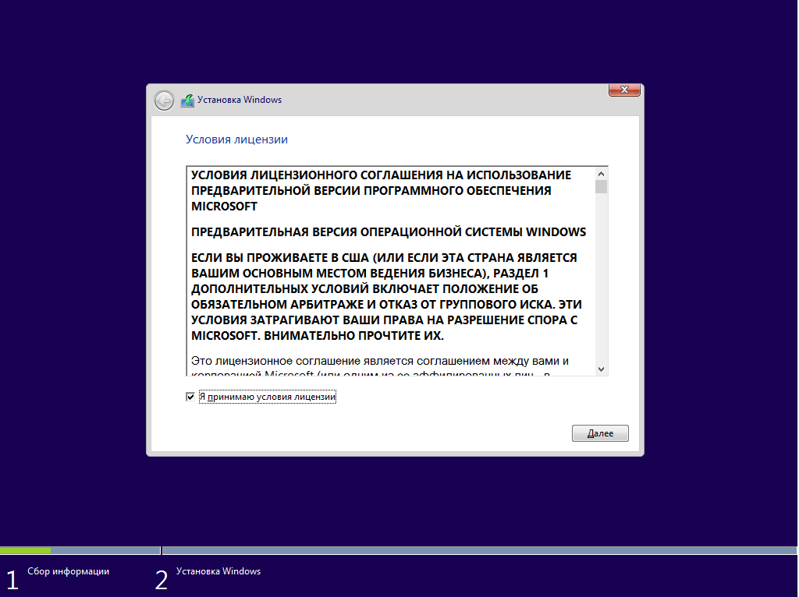
Выберите тип установки Выборочная: только установка Windows (для опытных пользователей)
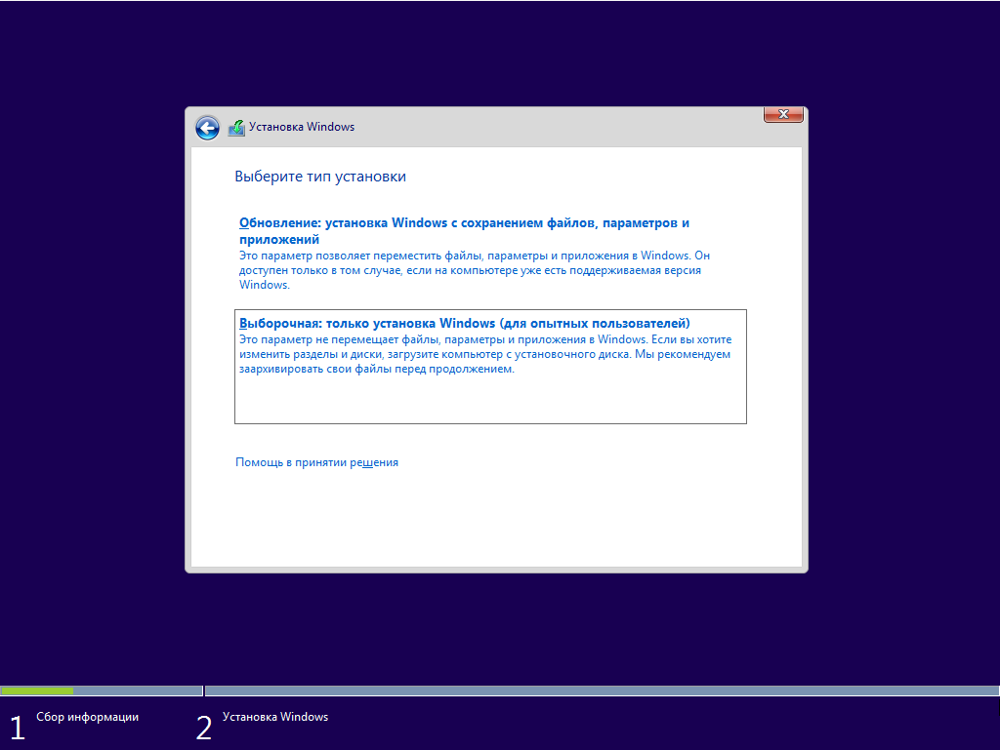
Выбор раздела установки
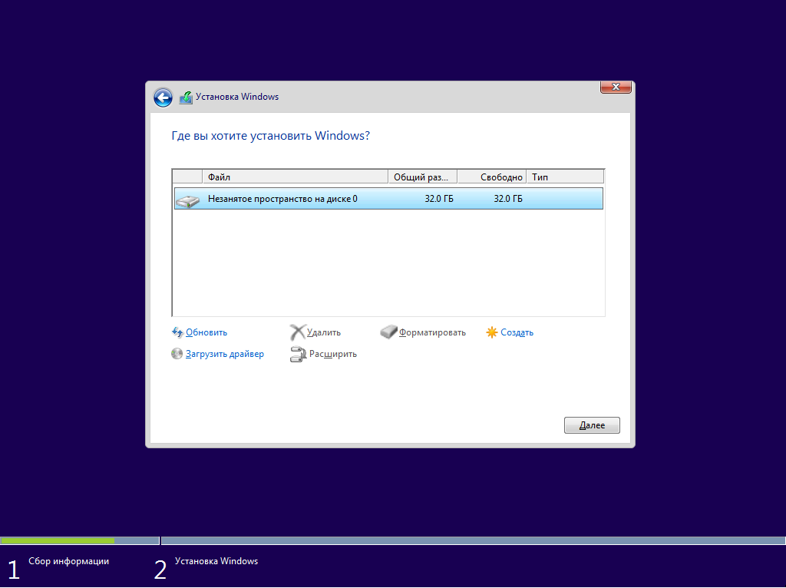
Установка Windows 10 с UEFI
Удалите все разделы на целевом диске. После этого нажмите кнопку Создать и выберите все доступное пространство для создания раздела.
При этом будут созданы 4 раздела на диске:
Раздел 1: Среда восстановления. Содержит среду восстановления
Раздел 2: Системный раздел (EFI). Содержит хранилище конфигурации загрузки (BCD) и файлы, необходимые для загрузки операционной системы.
Раздел 3: MSR (зарезервировано системой). Необходим для служебных операций встроенного и стороннего ПО (например, конвертирование простого диска в динамический).
Раздел 4: Система. На этом разделе будет расположена установленная система.
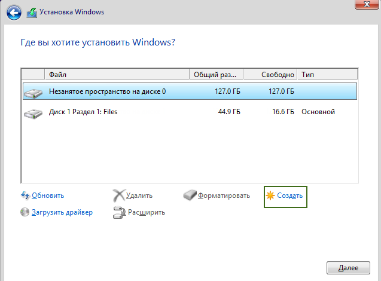
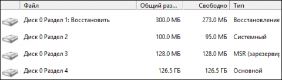
После выбора диска начнется процесс установки Windows 10. Во время установки экран может ненадолго гаснуть, а компьютер будет несколько раз перезагружен для завершения некоторых этапов установки.
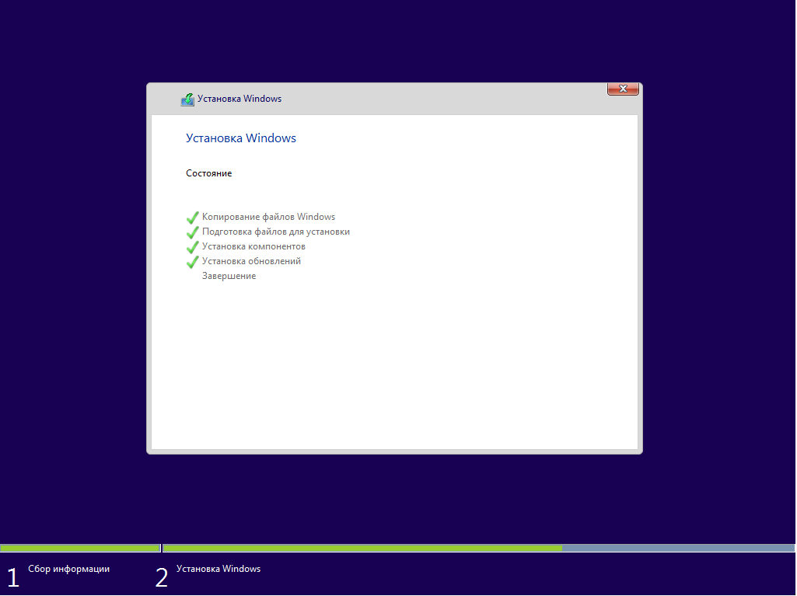
На следующем этапе вам предстоит выбрать базовые параметры персонализации и местоположения, а также подключения и отчетов об ошибках. Здесь вы можете выбрать вариант Использовать стандартные параметры (по умолчанию) или указать настройки вручную.
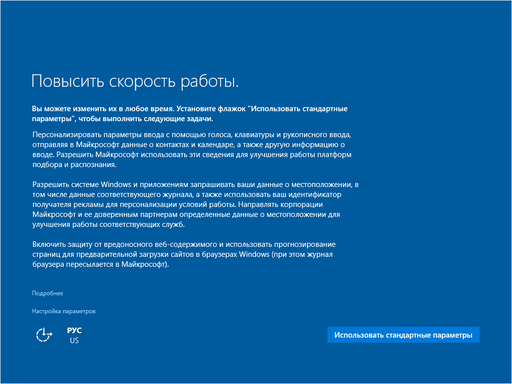
На следующем этапе выберите режим использования компьютера в сети. Если это домашний компьютер, выберите вариант Я владею этим компьютером. Если же компьютер следует подключить к доменной сети, выберите вариант Моя организация.
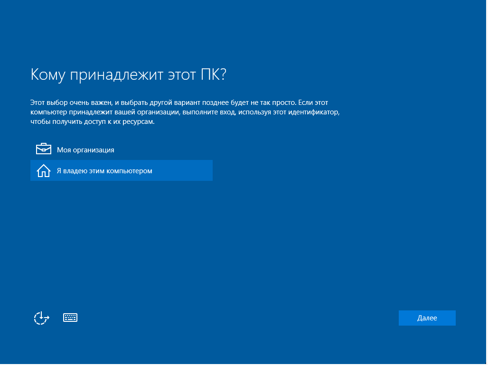
Создание учетной записи. Вход в систему с учетной записью Microsoft: введите адрес электронной почты и пароль учетной записи Microsoft. Здесь же вы можете создать новую учетную запись Microsoft если у вас ее еще нет.
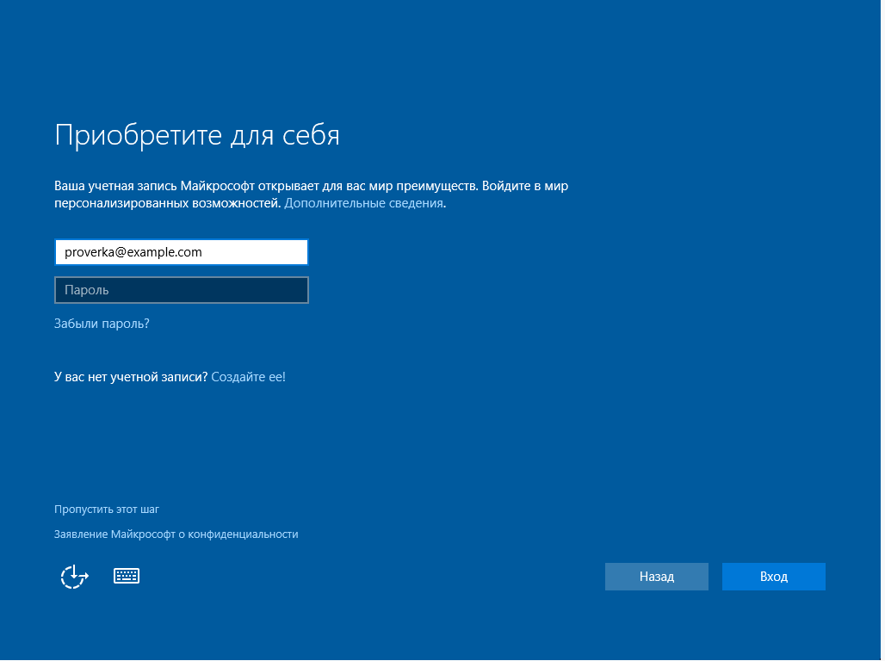
Если вы используете двухступенчатую авторизацию в учетной записи Microsoft, то вам понадобится выбрать вариант получения проверочного кода: на телефон или дополнительный адрес электронной почты, указанный в учетной записи Microsoft.
Создание локальной учетной записи.
Этот вариант может пригодиться в первую очередь при отсутствии подключения к интернет. Вы можете нажать ссылку Пропустить этот шаг и перейти к мастеру создания локальной учетной записи. В последующем вы сможете выполнить вход в учетную запись Microsoft из локальной учетной записи. Все ваши настройки и пользовательские данные при этом останутся нетронутыми.
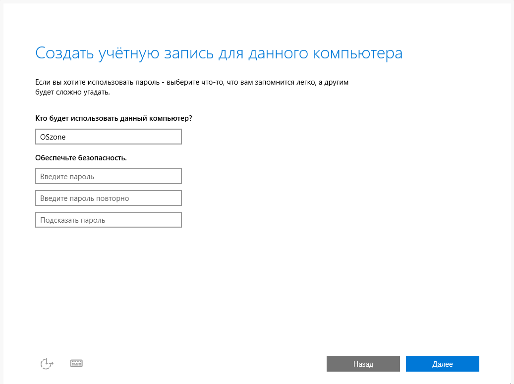
Если вы выполнили вход при помощи учетной записи Microsoft, то вам будет доступна авторизация в Windows при помощи ПИН-кода. Вы можете воспользоваться такой возможностью нажав кнопку Использовать ПИН-код или пропустить этот шаг.
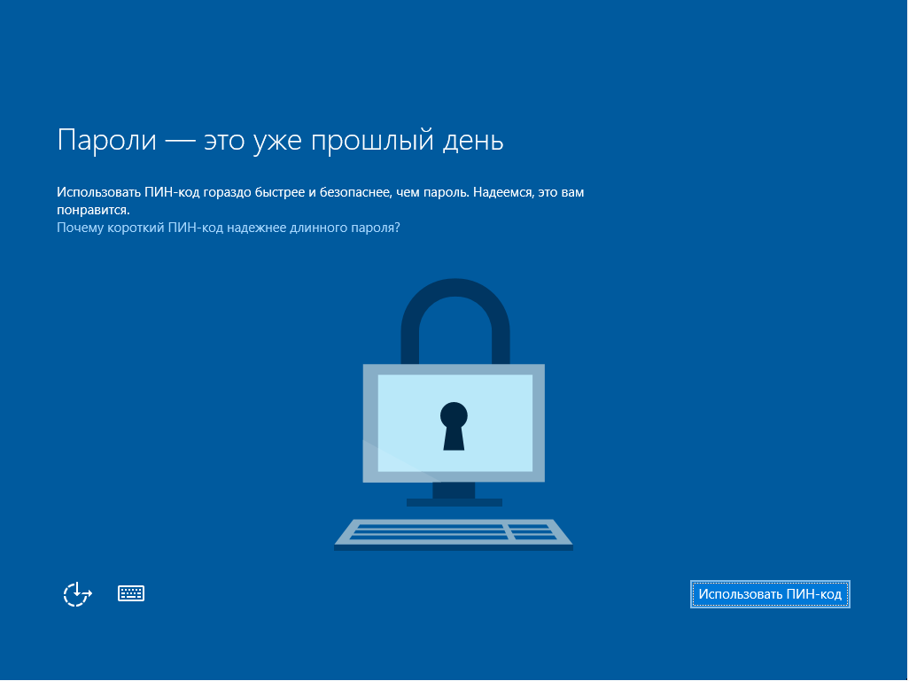
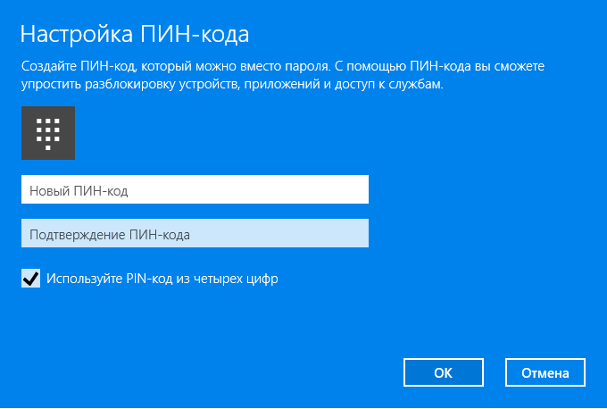
Если вы хотите использовать синхронизацию с One Drive, то на следующем шаге нажмите кнопку Далее. В противном случае выберите вариант По умолчанию сохранять новые файлы только на этом ПК.
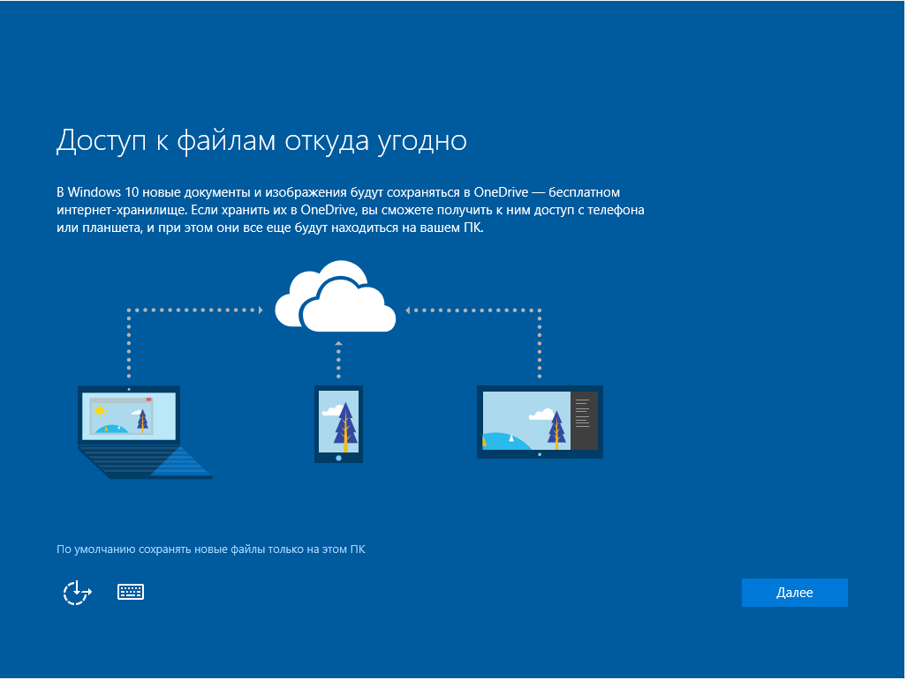
После загрузки рабочего стола вам остается только выбрать режим доступа к вашему компьютеру по локальной сети.